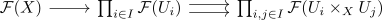

descent condition for the grothendieck topology associated to a pretopology
Proposition
Let $\mathcal{C}$ be a category and $\pi$ a Grothendieck pretopology. let $\tau$ be the associated topology, then a presehaf is a $\tau$ presheaf if and only if, for every $\pi$ covering family $U_i \rightarrow X$, the following diagram is an equalizer

Proof
follows from: